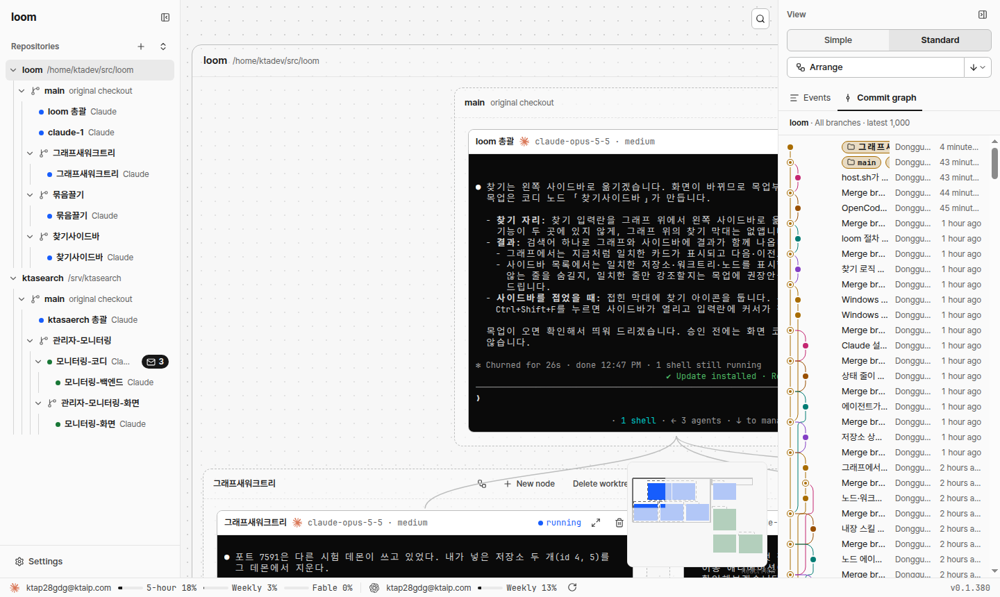

문서 ID: M7응답할 곳: 총괄 · loom 총괄연 담당: 총괄 · loom 총괄v1 · 2026-10-21
찾기를 왼쪽 사이드바로 옮기고, 결과를 그래프와 트리에 함께 보이기
사람 지시 "찾기 버튼은 우측 사이드바에 위치해서 그래프랑 사이드바 같이 결과나오는 방식이 좋겠음", "우측이 아니라 좌측". 찾기 입력 칸이 왼쪽 사이드바 맨 위로 온다. 글자 하나로 그래프(지금과 같은 강조·이동)와 사이드바 트리(맞는 줄만 남김)에 결과가 함께 보인다. 그래프 오른쪽 위의 찾기 단추와 막대(M3)는 지운다. 점선이 새로 생기는 곳이다.
① 지금 화면 찾기는 그래프 오른쪽 위 단추(M3)

- 찾기 단추가 그래프 칸 오른쪽 위에 있고, 결과는 그래프에만 보인다.
② 찾기 칸 빈 칸: 트리와 그래프는 그대로
- 입력 칸은 사이드바 이름(loom) 줄 아래에 늘 보인다. 열기·닫기 상태가 없다.
- 그래프 오른쪽 위의 찾기 단추(빨간 선)와 떠 있는 막대는 지운다. 찾기는 한 곳에만 있다.
- Ctrl+Shift+F는 지금처럼 터미널 안에서도 듣고, 이 칸에 포커스를 주고 글자를 모두 고른다.
③ 이름을 친다 “모니터링” → 일치 5개, 2/5 노드 「모니터링-코디」
- 트리: 맞는 줄과 그 위 줄(저장소·워크트리·부모 노드)만 남긴다. 위 줄은 흐리게 그린다. 맞는 글자에 노란 바탕을 칠한다. 맞는 줄이 없는 저장소(loom)는 숨긴다.
- 그래프: 지금과 같다. 맞는 카드·묶음은 밝게, 나머지는 흐리게, 현재 일치는 노란 테두리로 그리고 가운데로 옮긴다.
- 현재 일치는 트리에서도 노란 테두리다. 칸 안 숫자는 「현재/전체」다. Enter·↓는 다음, Shift+Enter·↑는 이전 일치다. ↑·↓ 단추는 지운다(키와 줄 클릭이 같은 일을 한다).
- 트리에서 맞는 줄을 클릭하면 그 줄이 현재 일치가 되고 그래프가 그리로 옮긴다. 노드 줄이면 지금처럼 그 노드도 고른다.
- 칸 끝 ×나 Esc는 글자를 지운다. 트리와 그래프가 ②로 돌아간다. 현재 일치가 노드면 그 노드를 고른 채로 둔다(지금과 같다).
④ 접힌 사이드바 레일에 찾기 아이콘
- 레일의 펼치기 단추 아래에 찾기 아이콘을 둔다. 클릭하거나 Ctrl+Shift+F를 누르면 사이드바를 펼치고 찾기 칸에 포커스를 준다.
- 글자가 남은 채로 사이드바를 접으면 그래프 강조는 남는다. 레일 아이콘에 점을 찍어 찾기가 켜져 있음을 알린다.
⑤ 일치 없음 “배포2”
- 칸 테두리가 빨갛고 숫자 자리에 「없음」이 보인다. 트리는 「맞는 이름이 없습니다」 한 줄만 보인다.
- 그래프는 흐리게 하지 않고 옮기지 않는다(지금과 같다).
⑥ 다른 안: 트리를 거르지 않고 강조만 비교용
- 모든 줄을 그대로 두고 맞는 줄만 강조, 나머지는 흐리게 한다. 맞는 줄이 접힌 묶음 안에 있으면 펼쳐야 한다.
- 노드가 많으면 맞는 줄이 화면 밖으로 흩어진다. 그래서 ③(거르기)을 권장한다.
승인할 것
| 항목 | 권장 | 다른 안 |
|---|---|---|
| 찾기 칸 자리 | 사이드바 이름 줄 아래, 늘 보이는 입력 칸(②)권장 | 사이드바 머리의 돋보기 단추를 눌러야 칸이 열린다 |
| 그래프 찾기 막대 | 지운다. 찾기는 사이드바 한 곳권장 | 둘 다 둔다(같은 글자를 공유) |
| 트리 결과 | 맞는 줄과 그 위 줄만 남긴다(③)권장 | 모든 줄을 두고 강조만(⑥) |
| 이전·다음 | 키(Enter·↑·↓)와 트리 줄 클릭. ↑·↓ 단추는 지운다권장 | 칸 옆에 ↑·↓ 단추를 남긴다 |
| 접힌 사이드바 | 레일에 찾기 아이콘. 누르면 펼치고 칸에 포커스(④)권장 | 레일에는 두지 않고 Ctrl+Shift+F만 펼친다 |